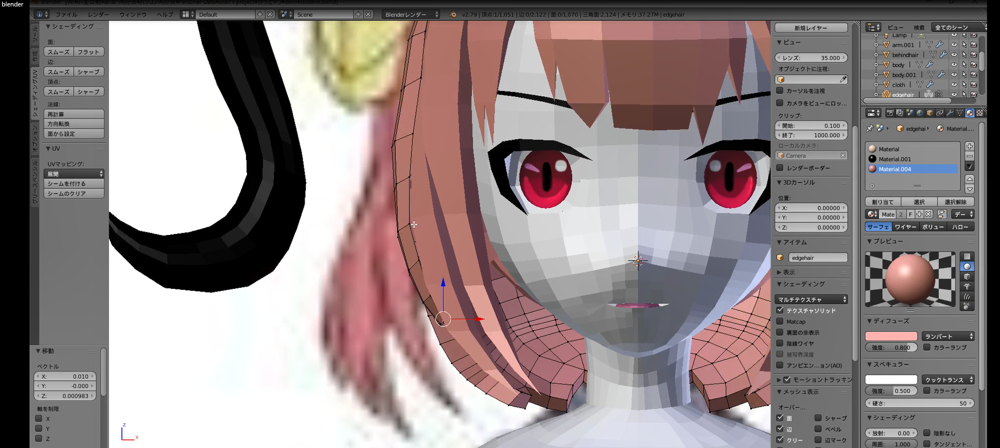
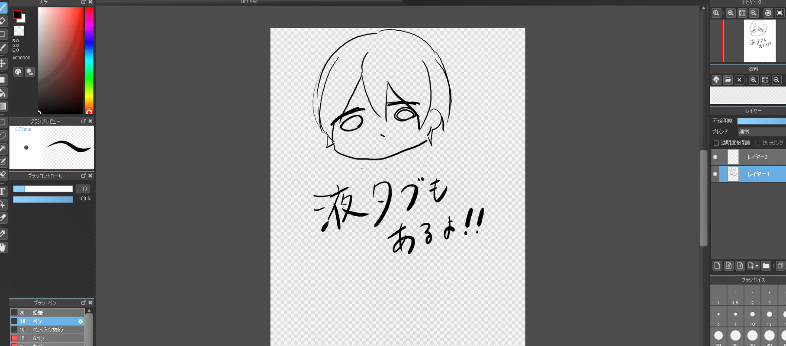
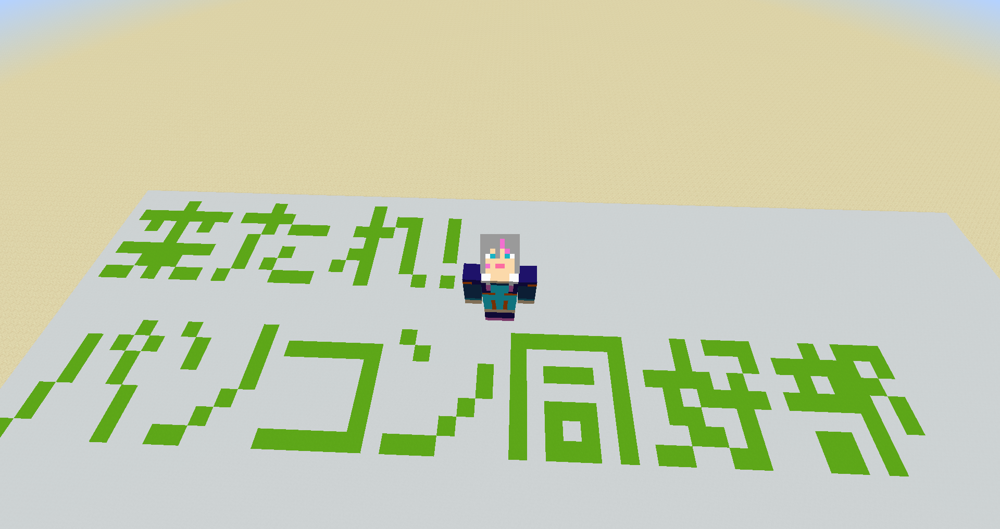
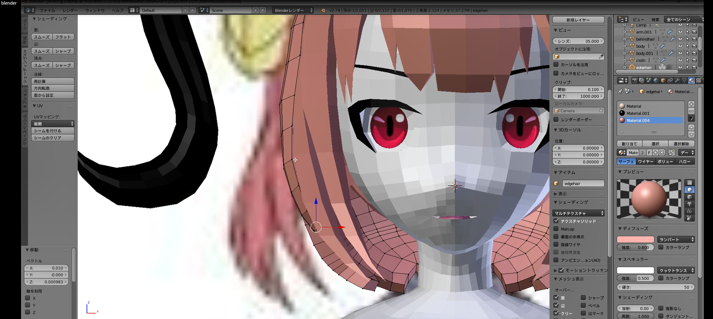
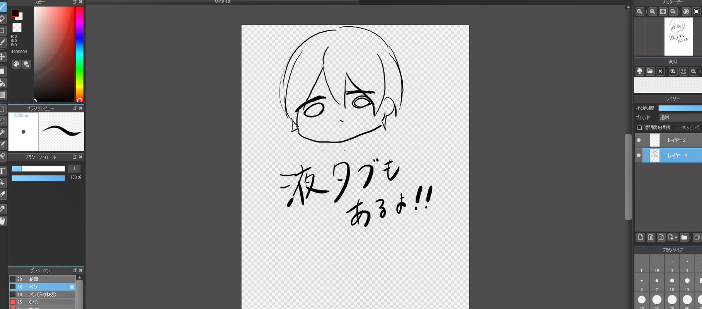
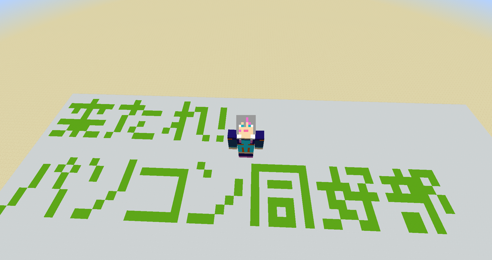
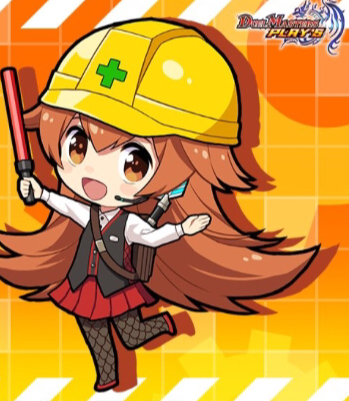

パソコン同好部は、2019年12月6日にパソコン同好会が部に昇格してできた部活です。
なんといっても自由な部活！！
部員のみんなは、好きな時間帯に、好きなツールを使って好きな作業をしています。
パソコン室を利用できる時間帯、使えるツール、その他のことを知りたい人！
ぜひぜひ下にスクロールしてチェック！！
パソコン室がある場所がわからない！！
パソコン室は情報の授業でよく使うと思うので、そんなことはないと思いますが、一応紹介しておきます。
パソコン室は北棟2階です。
もう一度言います。北棟2階です。
パソコン室はいつでも使える！...わけではなく、一応使える時間帯が決まっています。
パソコン室を使えるのは、授業以外では朝の始業前(通常時程は7:30～8:30)、昼休み(通常時程は12:25～13:05)、放課後(通常時程は15:00～17:00)です。
基本的に先生がパソコン室を開けてくださっている間は使えます！
撤収は急いでね。
パソコン室では、基本何でもできます！
できないことのほうが少ない。例えば大げさな運動とか飲食とか。
やれることの例としては、



などなど...

元1B
好きなアニメは「這いよれ！ニャル子さん」です！
(中略)
「這いよれ！ニャル子さん」は、仮面ライダー好きな逢空万太という筆者が色々なアニメ、漫画のパロディネタをこれでもかと詰め込んだことにより、
主人公ヒロインモブキャラから毎秒のようにネタがかまされるハイテンションラブコメディです！
クトゥルフ神話に出てくる禍々しい邪神達が可愛い女の子や可愛らしい小動物の姿をとり出てくるなど萌え要素が多い上、
人ならざるもの【邪神】のヒロインがツッコミがキレッキレな主人公:八坂真尋のことを全力のボケを交えて熱愛しながら
フォークで捌かれる姿はなかなかに面白いですw（しかも真尋のフォークは回を増す毎に…）
アニメが好きな方、そうでない方双方に紹介したいアニメです！暇だったら是非観てね(*´∇｀*)
占術を通じて世界の外側を見たんだ
そうしたら急にパソコンや電子機器に囲まれた人間生活が愉しそうに思えてな
パソコン同好部に入ろうと思ったんだよ
最近世界の終わりが近いという噂で不安で眠れないし汗も止まらず目眩や頭痛に悩まされていたんだがそれらがパソ同で一気に解消された
いやあ これなら世界の終わりも怖くない！

新入生の皆さんこんにちは。
パソコン同好部は、なんといっても忙しい立高生活のオアシスみたいなところが売りです。
部活が休みの日に少しだけ遊びに来たり、はたまた(自分の場合そうですが)隙あらばパソコン室に入り浸ったり。
自分はほかの人と違って特にパソコンが得意なわけじゃなくて後輩に何か教えられるものがあるわけでもありません。
だからもし聞くなら勉強のこととかにしてね(なんだこいつ)。
立高生活は本当に充実したものだと思います。そんな立高生活の中に、パソコン同好部での日々を取り入れてもらえれば幸いです。
好きなものは仮面ライダー、マイクラ、デュエマ等々。
余談ですがこの三人は全員元1Bです。